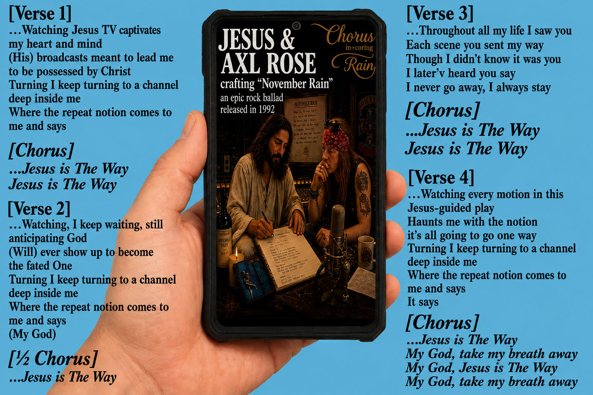

Inference Bridge is represented by Temple Road.
THE INFERENCE BRIDGE
How a deeply held worldview might be fulfilled rather than destroyed
I have a sense that Jesus is preparing me to receive—to actually accept, rather than resist—a new belief.
And not a small one.
A huge one. A paradigm shift.
Truly changing a deeply held belief is no small thing. These beliefs aren't furniture that can simply be rearranged. They're more like tectonic plates underneath the world I've been standing on. Move them, and everything built on top of them moves too.
Looking back over the past year, I can see what feels like a long preparatory process. It's as though Jesus has been laying down a conceptual framework—a bridge from where I have been, grounded in a fairly normal LDS worldview, toward someplace new.
And bridge seems important.
Because I don't sense Him asking me to blow up the old world behind me. The pattern feels more like Jesus' own language about the law: He did not come to destroy, but to fulfill.
So the bridge connects rather than severs.
Piece by piece, Jesus seems to be building enough conceptual continuity—and enough trust—that I can consider something new without feeling that He is asking me to abandon reason, common sense, or everything I've previously known to be good.
Instead, perhaps the strange new country on the other side is actually an inference from things I already believe.
For example:
If Jesus really is involved in everything that is lovely, of good report, and praiseworthy—then just how far do the implications of that belief extend?
Perhaps much, much farther than traditional, conventional, present company has generally supposed.
And that may explain why the bridge has needed to be built slowly.
**INFERENCE BRIDGE:** If Jesus collaborated with Axl Rose to write one classic rock song—“November Rain”—and He later collaborated with me, Greg Muller, to redeem that song (put MORE Jesus into it) and rename it “Christ Now Reign,” then how many more classic rock songs might have Jesus’ lovely, good-report, praiseworthy fingerprints on them? And what prevents Jesus from redeeming (ALSO) those (2,000) songs for—and with—Greg Muller? And if He can do this for Greg, can He—who is no respecter of persons—do the same for anyone who seeks such musical treasure (and maybe give them their own personal, redeemed version of said songs? And if Jesus can do this with songs and swords, Oh what else in the world can Jesus redeem? Me? No way. Really? Me? Sweet Jesus. Or more sharply, what can't the Redeemer Of The World redeem. #A=B=C=Christlogic #redeemerofeverything #BabylonyouruglybutJesushasaplan #buildthebridgewalkthebridge
It needs to be sturdy enough that I can walk out onto it while still holding onto the things that are dear and practical to me: my health, my sanity, my marriage, my work, my friendships, my reputation, my ability to function in the ordinary world.
Because crossing such a bridge may have costs.
Some friendships may change. Some people may decide I've gone too far. What feels to me like following an unfolding spiritual logic may look strange—or even dangerous—to somebody standing back on the familiar shore. Some of my old social status may not survive the crossing.
But here's where this gets particularly interesting:
What I am describing has precedents.
Not necessarily precedents proving that Jesus is doing this particular thing with me—that remains something for me to discern—but precedents for this kind of enormous religious and intellectual transition.
There is a recognizable pattern by which human beings come to inhabit radically enlarged worlds.
And Christianity itself provides one of the biggest examples.
The New Testament repeatedly presents something new as the surprising fulfillment of something already believed, rather than merely its destruction.
Jesus' words are almost the perfect bridge formula:
“I am not come to destroy, but to fulfil.”
Peter in Acts 10 is an especially interesting example. Peter doesn't begin as somebody wanting to discard Judaism. His inherited categories are very strong.
Yet experiences accumulate that stretch those categories until the Cornelius episode forces a much larger conclusion about Gentiles.
So schematically, something like this happens:
Old belief → stretching experiences → apparent contradiction → deeper principle → old belief reinterpreted → enlarged worldview.
That is very close to what I mean by an inference bridge.
There's another remarkable religious parallel in John Henry Newman.
Newman spent enormous effort thinking about precisely this problem:
How can an idea undergo enormous development and nevertheless remain organically connected to what came before?
He argued that ideas can contain implications that aren't initially apparent. Over time, people compare, connect, generalize and draw consequences from them until something that was latent becomes explicit.
An idea can remain in the mind, become clearer as its relationships are perceived, lead to further implications, and eventually produce an entire interconnected body of thought—sometimes before the person fully recognizes what is happening.
That sounds remarkably like an inference bridge.
But Newman also gives me an important safeguard:
Not every development is a legitimate development.
There is such a thing as corruption.
Among the tests for authentic development are continuity of principles, logical sequence, preservation of what came before, and what Newman called the “conservative action upon its past.”
In other words, fulfillment doesn't simply annihilate everything that preceded it.
And the secular world has its own version of this process.
In psychology and education there is an entire literature called conceptual change.
Jean Piaget distinguished between something like:
Assimilation: I incorporate new information into my existing mental world.
and
Accommodation: the new information eventually requires me to modify the mental structure itself.
Deeply interconnected beliefs can be remarkably resistant to change. Major changes can occur because discrepancies accumulate until the old conceptual structure has to be reorganized rather than merely patched.
And then there's Thomas Kuhn, which is where my tectonic plates metaphor becomes especially apt.
Kuhn argued that science ordinarily operates within a paradigm—an interconnected set of theories, assumptions, methods and examples.
Anomalies gradually accumulate.
Eventually, sometimes, the framework itself changes.
That's the famous paradigm shift.
Copernicus, Einstein, Darwin and others didn't simply decide one morning:
EVERYTHING I BELIEVED YESTERDAY WAS WRONG!
Rather, observations, problems, partial solutions, new concepts and implications accumulate until a formerly almost-unthinkable model becomes thinkable, then plausible, and perhaps eventually more coherent than the old one.
That is an inference bridge.
And this suggests an important refinement to my metaphor.
The bridge isn't necessarily there merely to persuade me to believe the thing on the other side.
It can also make it possible for me to inspect the thing on the other side without prematurely accepting it.
That's crucial.
A radical proposition presented without preparation can produce:
“That's crazy. No.”
But after a long conceptual bridge:
“Whoa. I see how somebody could get there from here. Now—is that inference actually warranted?”
Those are very different mental positions.
And that gives the inference bridge a built-in protection against exactly the dangers I worry about—losing sanity, relationships, practical judgment, etc.
If the process really is an inference bridge, every plank remains inspectable.
I can ask:
Does plank 7 actually follow from plank 6?
I don't have to say, “Because I believe Jesus constructed this bridge, therefore I must run across whatever appears in front of me.”
In my own LDS/Christian vocabulary:
“Prove all things; hold fast that which is good.”
That belongs on the bridge too.
So perhaps the preparation isn't merely about teaching me what to believe.
It's also about making the bridge strong enough—and building enough trust—that if the invitation really does come to walk farther out, I can examine it carefully, test it, and move without either reflexively retreating to the old shore or recklessly throwing away everything valuable that Jesus has already helped me build.
The bridge does not require me to burn the old world.
It asks whether I am willing to discover what that old world might become when fulfilled.
So I might describe what I sense happening this way:
Jesus isn't asking me to make an irrational leap across a canyon. I have a sense that He has spent a year building an inference bridge across it—one conceptual plank at a time. And perhaps the reason for the bridge is precisely so that I don't have to abandon reason, my previous experience, or everything I have learned on the old shore in order to investigate the new one.
And if my intuition about a very large belief waiting at the other end is right, then perhaps the year of apparently disconnected themes Jesus and I have been working through will make considerably more sense in retrospect.
The startling conclusion may only become recognizable after enough of its premises are already underneath my feet.
Maybe that is what the bridge is for.
Not to destroy the old shore.
Not to force me to leap.
But to make it possible for me to walk carefully from “I could never believe that”
to
“Wait a minute. If all of these things I already believe are true…where do they actually lead?”
Bridgeworks • Preparatory Material
The Stretch Before the Crossing
Preliminary pieces and exercises that belong to the preparatory work leading toward the world on the other side of the bridge.
The following documents will eventually be recreated by Jesus and Greg into various forms of art, including improv opera performances:
Feed Your Head (God's Love In You)
The Spirit Wrought Upon Me Scripture Reenactments
I imagine Jesus and Abba singing, "Greg, Take A Chance On Me"
Jesus told me, “Greg, what you watch—what you give sustained attention to—will eventually have power to possess you. What you watch invokes and strengthens one of two spirits within you: the Spirit of Babylon (the WORLD) or the Spirit of Christ (the Kingdom).
Think of whatever holds your attention as a kind of show you are watching. And, basically, there are two shows being broadcast on earth: the Babylon Show, on Babylon TV, and the Jesus Show, on Jesus TV.
Right now, Babylon TV is the popular, default channel. Many people don’t even realize they can change the channel. They don’t know another broadcast is available.
You have to stretch to tune into Jesus TV.”
Jesus said, "Greg, to help you tune into Jesus TV more easily, I am helping you put episodes of the Jesus Show on your phone and into other mysterious devices—your pillow, your shower, your bread, your water, your car, and many more things. I am doing this because you seek my rest. You will find that Jesus TV has the power to put you into a restful, possessed/flowing state of mind—a way of moving through your day something like Nephi described:
“I was led by the Spirit, not knowing beforehand the things which I should do. Nevertheless I went forth.”
—1 Nephi 4:6–7
.............
“Watching Jesus TV means being led by the Spirit—not knowing beforehand what I will think, believe, do, say, or discover. Nevertheless, I go forth. I tune in.”
—Jesus and Greg's take on 1 Nephi 4:6–7
Jesus also seems to say to me, "Greg, as you get better at watching, the Jesus Show (i.e., imagining your reality from a MORE Jesusy, other-worldly perspective than before) begins to unfold this way—full of surprise, intrigue, miracles, angels, demons, strange coincidences, unexpected turns, and things you could not have known beforehand.
You don't know exactly what will happen or what you will be led to do. Nevertheless, you go forth. You keep watching because what you are watching has your interest and your attention. It becomes more and more intriguing, compelling, and important."
In short, based on what Jesus has told me, I like to imagine that Jesus is continually broadcasting an exciting, immersive, important reality program—one that becomes increasingly visible to those who seek it and thereby develop better eyes to see it.
I call it Jesus TV, because that is what Jesus taught me to call it.
He may have you call it something else, so #HearHim (not #HearGreg).
What you see here is one way Jesus has me tune in to His Show.

